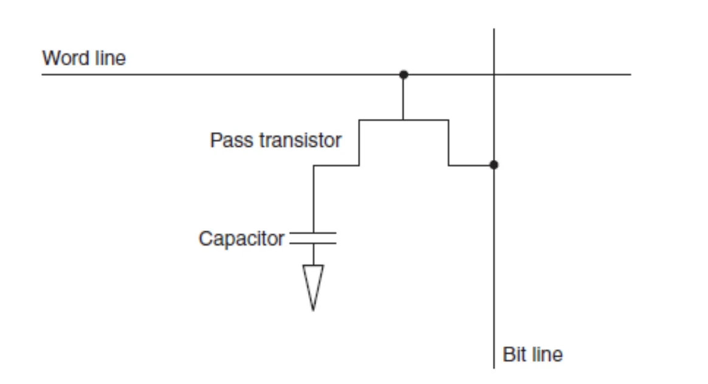
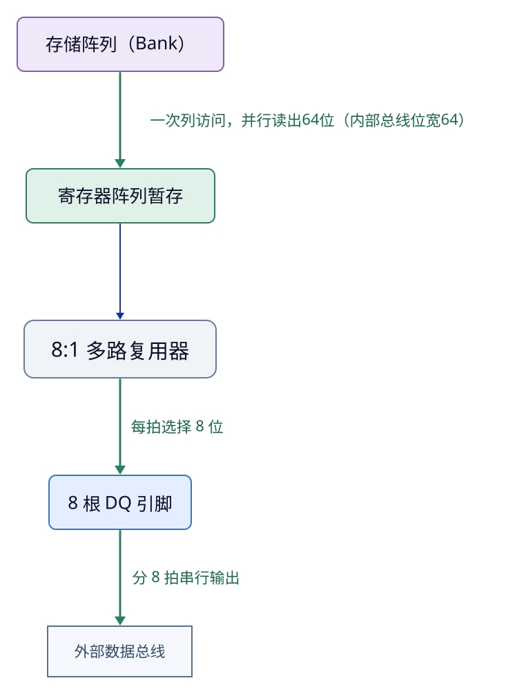
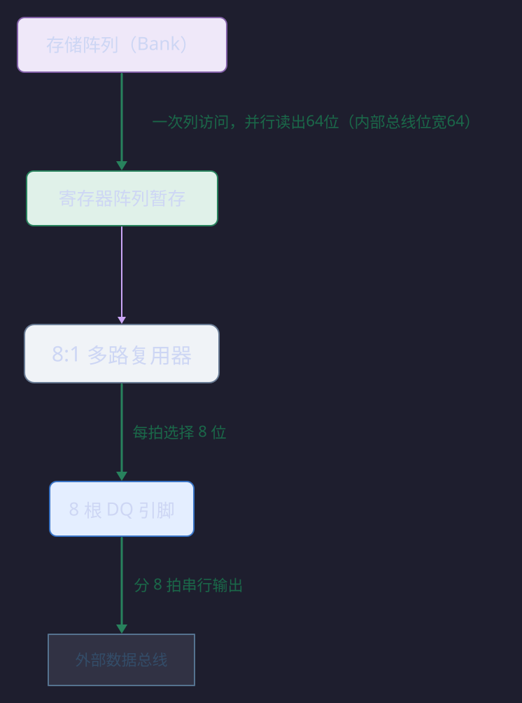
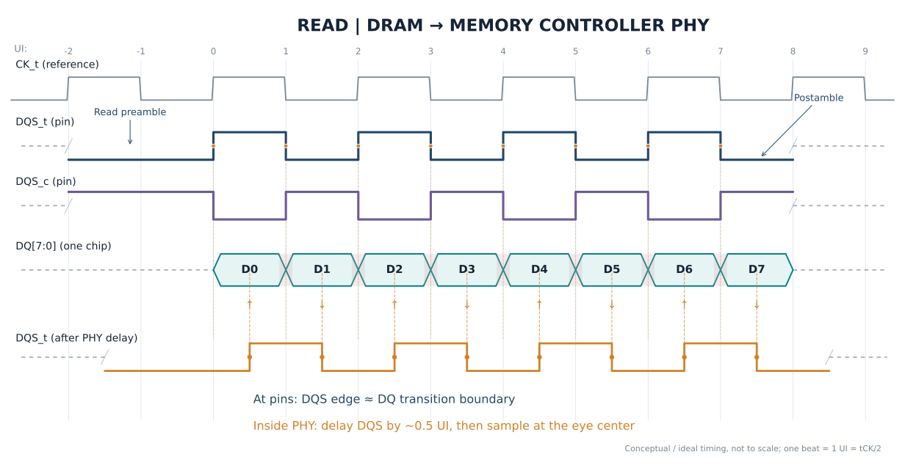
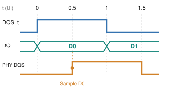
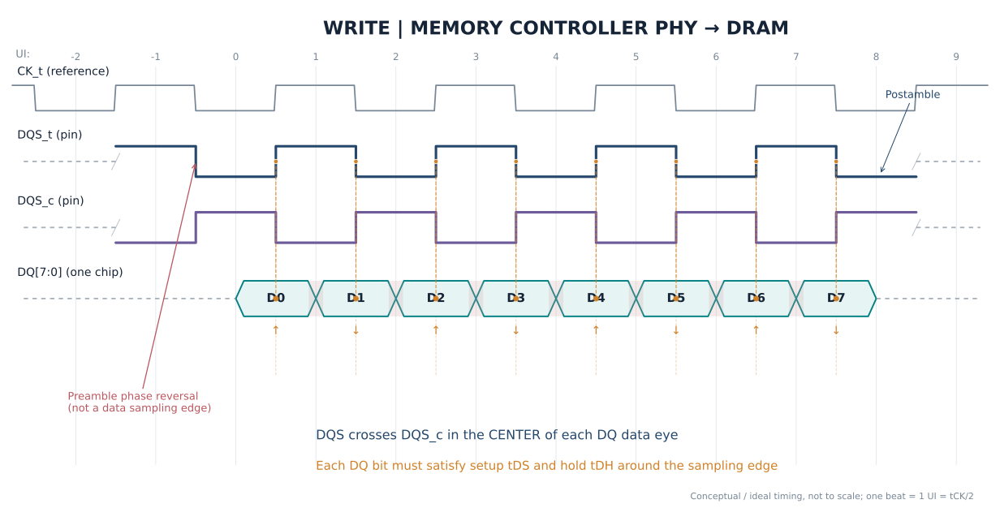
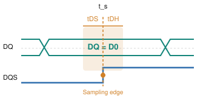
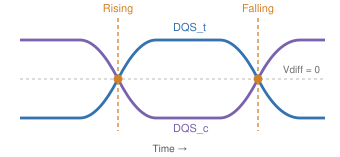

DRAM Structure Organization¶
I. Introduction¶
从软件看来，Memory 是一个类似：
的一维线性空间。但真实 DRAM 更接近：
也就是说，我们在 CPU 那里看到的：PA=0x12345678，最终可能被映射成：
所以软件空间地址与物理 DRAM 地址之间存在 Address Mapping。
接下来，我们从最底层的 DRAM Cell 开始，逐步向上分析 DRAM 的层次结构。
II. DRAM 的层次结构¶
2.1 DRAM Cell¶
一个 DRAM bit 的经典结构是：1 Transistor + 1 Capacitor，如图：

Capacitor 是否存储电荷表示 1 或 0。
电容会漏电，因此需要定期 Refresh（刷新）——这就是 DRAM 名称中 Dynamic 的来源之一。
2.2 按 Row 和 Column 的组织¶
假设有一大片 DRAM Cell:
它不是每次只访问一个 bit，实际访问过程可以粗略理解为：
- 先选一整行 Row
- 整行数据进入 Sense Amplifier / Row Buffer
- 再从 Row Buffer 中选择 Column
之所以会有这样的访问方式，是因为 DRAM Cell 的 Row & Column 组织方式：
DRAM Cell 的 Word Line (字线) 与 Row (行) 对应，Bit Line (位线) 与 Column (列) 对应。具体来说：
Word line 与 Row¶
Word Line 是横向贯穿存储阵列的控制线，每一根 Word Line 唯一对应一个 Row。
- 物理连接：同一个 Row 上所有 DRAM Cell 的 访问晶体管栅极（Gate） 都连接到同一根 Word Line。当这根 Word Line 被 激活（施加高电压） 时，该行上所有 Cell 的晶体管会同时导通。
- 操作粒度：DRAM 的激活操作是以 Row 为单位的。Row Decoder 根据行地址选中并驱动一根 Word Line，从而j激活整行。
正因为一根 Word Line 能一次性激活一整行的所有存储单元，所以“共享同一根 Word Line 的 Cell 集合”就被定义为一个 DRAM Row。
Bit Line 与 Column¶
Bit Line 是纵向贯穿存储阵列的数据线，每一根（或每一对）Bit Line 唯一对应一个 Column。
- 物理连接：同一个 Column 上所有 DRAM Cell 的访问晶体管漏极（Drain）都连接到同一根 Bit Line。当某行的 Word Line 激活后，栅极处于高电平，晶体管导通，该行 Cell 内的电容电荷就会与各自所在列的 Bit Line 发生电荷共享，从而被读出。
- 数据通路：Bit Line 负责将存储电容中的微弱信号送往灵敏放大器（Sense Amplifier）进行放大，最终输出为数字 0 或 1。
- 列选择：虽然激活是整行发生的，但数据输出时，Column Decoder 会通过列选择信号（CSL），从被激活的整行中，仅选中所需要的那一列（或几列）的 Bit Line 数据送到 I/O 总线上。
在现代 DRAM 的层次化结构中，为了降低功耗和延迟，上述“Word Line 对 Row、Bit Line 对 Column”的关系在子阵列（Subarray）层面依然严格成立，只是命名上可能演化为 Local Word Line / Local Bit Line 等变体。
所以 DRAM 访问天然具有两阶段性质：Active Row → Access Column。
并且，我们不难注意到上述访问方式有一个严重限制：不能同时激活多行！
不能同时激活多行
一列的所有 DRAM Cell 是共享同一根 bit line 的吗？如果是这样，那么一次访问开启多行的时候，然后读取同一列的数据？是否会出现错乱？还是说不允许这种操作？
——没错，就是不允许这种操作！这确实是 DRAM 架构中一个关键的限制。一列的所有 DRAM Cell 确实共享同一根 Bit Line，但同时激活多行并读取同一列是绝对不允许的，这会直接导致数据错乱。
在同一个 DRAM Bank 内，每一列只有一根（或一对差分）Bit Line，垂直贯穿整个阵列，连接着该列上所有 Row 的 DRAM Cell。当一行被激活时，该行所有 Cell 的电荷会同时“共享”到各自连接的 Bit Line 上，这个过程称为 Charge Sharing。Sense Amplifier 随即检测 Bit Line 上微小的电压变化，并将其放大为完整的逻辑电平。
如果尝试在同一 Bank 中同时激活两行，那么这两行位于同一列的 Cell 会同时向同一根 Bit Line 放电——Bit Line 上的最终电压将取决于两个 DRAM Cell 电荷的“竞争”结果。
- 如果两个 Cell 存储的值相同（都是 1 或都是 0），Bit Line 的电压可能勉强能被正确识别；
- 但如果一个存 1、一个存 0，它们会相互中和，导致 Bit Line 的电压处于一个模糊的中间态。灵敏放大器无法判断这个中间电压代表的是 0 还是 1，读出的数据就是随机的、错误的。
正因为这种物理上的冲突，DRAM 的基本协议从架构上就禁止这种操作。
Precharge 与访问完整物理流程
从外部看，“行激活”只是给Word Line（字线）一个高电平，但在器件物理层面，这个高电平是一系列精密物理过程的触发器。而 Precharge（预充电） 正是为这个触发过程搭建一个确定、可复现的初始物理状态。
我们考虑如下这一场景：存储电容为 \(C_s\)，行激活前电压 \(V_{\text{cell}}\); 位线电容为 \(C_{BL}\)，行激活前电压：\(V_{BL}\)。我们假设晶体管是理想晶体管，导通电阻为 0，那么行激活后，两个电容达到相同电压：
那么位线电容的电压变化为：
通常来说，位线电容 \(C_{BL}\) 远大于存储电容 \(C_s\)，所以 \(\Delta V_{BL}\) 会相对较小。这个电压变化极其微弱，通常只有几十到一百多毫伏。这就是为什么单纯的“高电平”远远不够，必须要有后续的 Sense Amplifier 来将这个微小差异放大成完整的逻辑电平。
Precharge 的核心目的，就是为上述微弱的电荷共享过程，创造一个确定、均匀且已知的初始条件。简单来说，就是提供一个稳定的、确定的 \(V_{\text{BL}}\)。如果没有Precharge，位线电压将处于不可预测的浮动状态，微弱的信号将完全被噪声淹没。
Precharge 的物理过程可以总结为：通过 Precharge电路，将一对互补位线（BL和/BL）短接，使它们的电位强制相等，通常为：\(V_{DD}/2\)，这是一个精妙的平衡。无论电容存储的是高电平（接近 \(V_{DD}\)）还是低电平（接近0V），电荷共享后，位线电压都会从 \(V_{DD}/2\) 这个“中点”向两个方向产生对称的偏移。这能最大化灵敏放大器可检测的初始电压差。
结合上述物理过程，一次DRAM读取在器件层面的完整图景是：
- Precharge：位线对（BL, /BL）被均衡并预充到 \(V_{DD}/2\)。此时，字线处于关闭状态，存储电容 \(C_S\) 与外界隔离，保持着数据电荷。
- 行激活与电荷共享：字线被拉至高电平，该行所有存取晶体管导通。每个存储电容 \(C_S\) 与自己的位线 \(C_{BL}\) 发生电荷共享，导致位线电压产生一个微小的、依赖存储数据的偏移（高于或低于\(V_{DD}/2\)）。
- 灵敏放大：灵敏放大器被激活，它本质上是一个正反馈锁存器。它检测到BL和/BL之间微小的电压差，通过正反馈迅速将这个差异放大并锁存：电压稍高的一侧被拉至 \(V_{DD}\)，稍低的一侧被拉至地（GND）。
- 数据再生：在灵敏放大过程中，被拉至满幅（\(V_{DD}\)或GND）的位线电压会反过来给存储电容\(C_S\)充电或放电，将其电荷状态恢复到读取前的水平，补偿了电荷共享造成的损失。这正是DRAM“破坏性读出”后“再生”的物理机制。
Row Buffer¶
假设 Bank 中存在 Row 100, Row 101, Row 102 ...
当前已经打开 Row 100，它的数据已经被放入 row buffer。
这时访问 Row 100, Column 10，然后又访问 Row 100, Column 20，第二次访问就相对快。这称为：Row Hit。因为当前需要的 row 已经是 open row。
如果访问 Row 101，那么通常需要：
关闭 Row 100 → Precharge → Activate Row 101 → Access Column
这种情况称为：Row Conflict。
所以 Row Hit 通常明显快于 Row Miss / Row Conflict，这也是为什么 DRAM 访问延迟并不是一个完全固定的数字。
2.3 Bank¶
上述 Row 和 Column 的组织方式决定了一块区域不能同时激活多个 Row，否则会出现 bit line 紊乱。
如果整个 DRAM 只有一个大 Row Buffer，那么就会出现这种情况
Access Row A → Waiting →
Access Row B → Waiting →
Access Row C → Waiting ...
并行性非常差，所以 DRAM 被进一步划分成多个 Bank。
例如：
每个 Bank 有自己的 Row Buffer。因此可以做到：
- Bank 0 正在 activate
- Bank 1 正在传输数据
- Bank 2 正在 precharge
- Bank 3 正在等待
这就是：Bank 级并行（Bank-Level Parallelism, BLP）
Latency 与 Bandwidth
Bank 数量增加，并不意味着单次访问延迟变短。它主要提高并行处理多个 memory requests 的能力。也即 Latency 和 Bandwidth 的区别。
多 Bank、多 Channel 主要是在提高带宽。
假设一个 memory request：load A 需要 80ns。
如果只能串行：Access A -> Access B -> Access B，吞吐量会很低。
但是如果存在多个 Bank，就可以：
- Bank 0: Access A
- Bank 1: Access B
- Bank 2: Access C
很多访问就可以 overlap，于是单次 latency 依旧很高，但是总 Throughput 会提高。
2.4 DRAM Chip¶
一个 DRAM Chip 通常包含多个 Bank，每个 Bank 有自己的 Row Buffer 和 Column 结构。
所以到目前为止的层次化结构为：chip -> bank -> row -> column。
但是一个 DRAM Chip 并不一定一次提供完整的 64 bit CPU memory bus 数据。
例如很多 DRAM 芯片可能是：x4, x8, x16 ... 这里的 x8 表示一个 DRAM Chip 每次提供 8 bit 数据。
更具体来说，x\(n\) DRAM Chip 内部阵列中，一个 Column 地址就包含 n 个 bit。例如：
| 芯片规格 | 每个 Column 地址对应的数据位宽 | 一个 Bank 的内部组织示例 (行 × 列 × 位宽) |
|---|---|---|
| x4 | 4 bit | 4096 行 × 2048 列 × 4 bit |
| x8 | 8 bit | 4096 行 × 1024 列 × 8 bit |
| x16 | 16 bit | 4096 行 × 512 列 × 16 bit |
于是需要多个 DRAM chip 并行工作，例如 8 × x8 chips 可以形成 64-bit 的数据宽度。
2.5 Rank¶
上述共同工作的、一次给出完整数据的多个 DRAM chips 称为一个 Rank。
概念上：
Rank 0
Chip0 Chip1 Chip2 Chip3 Chip4 Chip5 Chip6 Chip7
│ │ │ │ │ │ │ │
└─────┴─────┴─────┴─────┴─────┴─────┴─────┘
64-bit
因此 Rank 是一组同时响应同一组 memory command、共同提供一个完整数据宽度的 DRAM chips。
x8 的 8bit 来自几个 Bank、来自几个 ROW？
比如 CPU load A 想要一个 64 bit 的数据，那么其中分配给 DRAM chip 0 的是 A[0:7]，那么：
- 这 8 个 bit 是由多个 Bank 给出的还是一个 Bank 给出的？
- 如果是一个 Bank ，那么是一个 Row 同时给出 8bit 还是多个 Row 共同给出 8bit？
结论是：对于一次64位的 CPU Load，分配给单个 x8 DRAM 芯片的那 8 位数据，通常来自该芯片内部的一个Bank，并且是在一次行激活后，从同一行中通过突发传输（Burst）连续读出的。
更具体地来说：
在现代 DRAM 中，一个Bank内部一次列访问产生的数据量通常是64位（或128位）。例如 x8 芯片对外的数据引脚（DQ）是 8 位宽，但其内部存储阵列（Bank）到 I/O 逻辑的数据通路要宽得多（64 bit）。
这种设计被称为 8n 预取架构。以 DDR3 x8 为例，芯片内部一次性从存储阵列中并行读出 64 位数据，然后通过一个多路复用器，将这64位数据拆分成8个连续的8位块，在外部时钟的驱动下，通过8 根 DQ 引脚依次串行输出。
2.6 DIMM¶
DIMM, Dual In-line Memory Module，双列直插内存模块。是一种将多个 DRAM chips 安装在 PCB 上，并带有金手指接口的内存模块。一个 DIMM 可以有多个 Rank，例如：
- DIMM
- Rank 0
- Rank 1
物理上，DIMM 包含：
其本质就是把多颗 DRAM 芯片组织成标准化内存模块。
2.7 Channel¶
现在来到了 Memory Controller 级别，一个 Memory Controller 可以有多个 Memory Channel，每个 Channel 通常拥有相对独立的数据传输资源。
多个 Channel 可以并行工作，例如：
- Channel 0: Access A
- Channel 1: Access B
- Channel 2: Access C
- Channel 3: Access D
这就是通道级并行（Channel-Level Parallelism, CLP）。
III. Memory Controller¶
Memory Controller (MC) 是 CPU 与 DRAM 之间的核心枢纽，它负责将 CPU 发出的64位物理地址翻译成 DRAM 能理解的 Channel → Rank → Bank → Row → Column 命令序列，并高效地调度这些命令。
Memory Controller 的主要功能包括：
- 地址解码：MC 内部有可编程的地址映射逻辑，负责将统一的物理地址空间“切分”成不同的位段，分别对应 Channel、Rank、Bank、Row 和 Column。
- 命令调度与重排序：MC 维护一个命令队列 (Command Queue)，它会根据 DRAM 的时序约束（如 tRAS, tRP, tCAS 等）和当前 Bank 状态（Row Buffer 是否命中），对读写请求进行重排序 (Re-ordering)，以最大化吞吐量、最小化延迟。
- 刷新管理：DRAM 电容会漏电，MC 内的刷新逻辑 会周期性地生成自动刷新命令，在后台维持数据完整性，无需 CPU 干预。
- 多核仲裁：当多个 CPU 核心同时请求内存时，MC 中的仲裁器 (Arbiter) 负责在命令队列和刷新逻辑之间进行选择，公平且高效地分配内存带宽。
这里我们着重介绍物理地址解码功能。
3.1 物理地址解码¶
物理地址解码是将一个 64 位的线性地址，按照从低位到高位的顺序，切分成若干段，每一段对应 DRAM 层次结构中的一个特定组件。
一个典型的解码层次结构如下（从低位到高位）：
Byte Offset → Column → Bank (Group) → Rank → Row
- Byte Offset (字节偏移)：地址的最低几位用于在一个数据总线宽度（如64位=8字节）内定位具体字节。对于64位总线，最低 3 位（\(2^3=8\)）就是字节偏移。
-
Column (列地址)：Column 地址选择 Bank 内的列。列地址位宽决定了每个 Row 中有多少个可寻址的“数据块”。而一个 Column 包含多少位数据，取决于 DRAM Chip 的规格（x4, x8, x16 等）。例如，x8 芯片的每个 Column 地址对应 8 位数据。
注意：这里的 Column 地址是系统地址编码中的 Column 地址，一个 Column 包含多个 bit；这个 Column 地址不是 DRAM Chip 内部 Cell Array 的 Column 地址——这个地址准确来说是 Bit Line 地址。
-
Bank (Bank 地址)：Bank 地址位用于在 Rank 内选择具体的 Bank。其位宽由 Rank 内 Bank 的数量决定（例如，8 个 Bank需要 3 位）。
- Rank (Rank 地址)：如果系统有多个 Rank，还需要一段地址来选择目标 Rank。
- Row (行地址)：剩余的最高位地址段用于选择 Bank 内的 Row（页面）。这是地址中位宽最宽的部分，决定了每个 Bank 有多少行。
注意：这个切分顺序并非绝对固定。Column 地址有时会被拆分成高、低两部分，分别放在 Bank 地址的两侧，以实现更精细的交错策略。
为什么地址解码中，没有 DRAM Chip 层级？
因为同一个 Rank 内的所有 DRAM Chip 是并行、同时被选中的—— Rank，本身就是一组 DRAM Chip。
例如，8 颗 x8 DRAM Chip 组成一个 64-bit Rank。
当 CPU 请求一个 64 位数据时：
- 命令与地址广播：内存控制器向这个 Rank 发出同一套 Command、Bank Address、Row Address、Column Address 信号。这 8 颗 Chip 的地址引脚是并联的，它们同时收到完全相同的地址。
- 同时激活：8 颗 Chip 各自在自己的对应 Bank 中激活对应的 Row，同时进行电荷共享和灵敏放大。
- 各贡献 8 位：每颗 Chip 通过自己的 8 根 DQ 引脚输出 8 位数据。
- 硬连线拼接：在 PCB 或 DIMM 上，Chip 0 的 8 根 DQ 连接到数据总线的 DQ[7:0]，Chip 1 连接到 DQ[15:8]，……，Chip 7 连接到 DQ[63:56]。这个映射是物理布线固定死的，不需要任何地址位来“选择”哪颗 Chip 输出哪一段。
所以，Chip 之间的分工是由数据总线的物理走线决定的，而不是由地址解码决定的。地址解码只负责在 Channel、Rank、Bank、Row、Column 这些维度上做选择；一旦 Rank 被选中，Rank 内所有 Chip 就作为一个整体同时工作。
Channel 层级为什么通常不会放在地址最高位？
这是体系结构中一个很漂亮的设计思想。
假设：
0x00000000~0x3FFFFFFF→ Channel 00x40000000~0x7FFFFFFF→ Channel 1
那么连续数组：A[0], A[1], A[2], A[3]... 它们的 PA 的高位地址通常是相同的，因此 CPU 很可能长期只访问：Channel 0，这会浪费其他并行 Channel 的带宽。
因此 Memory Controller 通常会做：Memory Interleaving，将连续的地址映射到不同的 Channel 上，从而充分利用多通道并行性。
地址映射的灵活性与交错策略¶
上面的例子展示的是一种物理布局。但在真实系统中，MC 的地址映射是高度可配置的，其核心目的是优化并行性。这通过交错 (Interleaving) 技术实现：
- Channel Interleaving：例如上述例子。
- Cache-line Interleaving：将连续的 Cache Line 分散到不同的 Bank 中。这样，CPU 连续访问相邻地址时，请求会并行地发往多个 Bank，从而隐藏单个 Bank 的行激活延迟，提升带宽。
- Row Interleaving：将连续的地址映射到不同的 Bank 的相同 Row 中，这同样是为了并行化访问。
此外，现代 MC 还会使用XOR 加密/散列的方式，将部分高位地址位（如 Row 位）与低位地址位（如 Bank 位）进行异或运算，来生成最终的 Bank 地址。这可以打散规律性的访问模式，避免“Bank 冲突”（多个请求同时命中同一个 Bank），是一种更高级的交错技术。
3.2 请求调度¶
MC 不会严格按照 Memory 访问请求的到来顺序进行处理，而是会考虑 Re-ordering。
例如 CPU 依次发出如下访问请求：
- Req A → Bank0 Row10
- Req B → Bank0 Row10
- Req C → Bank0 Row11
- Req D → Bank0 Row10
如果严格按照顺序处理，那么：A 和 B 会开启 Row 10，但是 C 会关闭 Row 10，开启 Row 11，这又会涉及到 Precharge → Activate → Access Column 的完整流程，延迟会很高。Memory Controller 完全可以重排序为：
- Req A → Bank0 Row10
- Req B → Bank0 Row10
- Req D → Bank0 Row10
- Req C → Bank0 Row11
这样就可以增加：row buffer hit rate，掩盖 row activation latency，提高吞吐量。
一个经典的调度策略就是 FR-FCFS（First Ready - First Come First Serve），粗略理解是：
- 优先选择已经 Ready 的 Row hit
- 其次再考虑到达时间
这样可能可以提高这样提高 memory throughput，代价是可能带来 fairness 的问题，例如某些 Bank 的请求可能会被长期延迟。
IV. MishMash¶
4.1 "\(k\)n" Prefetch Architecture¶
之前提到过这个案例：
以 DDR3 x8 为例，芯片内部一次性从存储阵列中并行读出 64 位数据，然后通过一个多路复用器，将这64位数据拆分成8个连续的8位块，在外部时钟的驱动下，通过8 根 DQ 引脚依次串行输出。
这种机制就是 "8n" Prefetch Architecture。
准确来说，
- \(n\) = 这颗 DRAM 芯片对外的数据引脚宽度（DQ 位宽）。也就是的 x4、x8、x16 里的那个数字。x8 芯片，n=8；x4 芯片，n=4；x16 芯片，n=16。
- \(k\) = 预取倍数，即芯片内部一次从存储阵列中并行读出的数据量，是外部 DQ 宽度的 \(k\) 倍。
所以“8n 预取” = 芯片内部一次并行读出 \(8\times n\) 位，然后通过 n 根 DQ 引脚分 8 拍串行送出。
——这里还必须配合 Burst 传输理解，比如此处 Burst Length 就是 8。
不同规格 DRAM Chip 的 "8n prefetch" 体现：
| 芯片规格 | n（外部DQ宽度） | 8n（内部一次预取宽度） | 外部突发拍数 | 一次突发总输出 |
|---|---|---|---|---|
| x4 | 4 bit | 32 bit | 8 拍 | 8×4 = 32 bit |
| x8 | 8 bit | 64 bit | 8 拍 | 8×8 = 64 bit |
| x16 | 16 bit | 128 bit | 8 拍 | 8×16 = 128 bit |
硬件支持：内部数据通路¶
以 "x8" 的 "8n prefetch" 为例，一颗 x8 芯片内部的数据流是这样的：
 
- 暂存：8n 预取并行读出的宽数据（例如 64 位），会被送入位于 Sense Amplifier 和 Column Selector 之间的 Latch 或 Register阵列中。这个寄存器阵列有能力存储一次突发传输所需的全部数据。
- 输出过程：这个宽寄存器阵列的输出连接到一个多路复用器。MUX 在内部高速时钟的驱动下，逐拍从宽数据中切出 n 位，送往 DQ 引脚。这就完成了并行到串行的转换。
设计动机：为什么要有 prefetch¶
——解决“核心慢、接口快”的速度鸿沟，这是 prefetch architecture 存在的根本原因。
DRAM 的核心阵列（电容 + 灵敏放大器 + 位线）的物理操作速度是有上限的——灵敏放大器检测微小电压差、电荷共享、数据再生，这些模拟物理过程需要时间。而外部 I/O 接口的时钟频率却在每一代 DDR 中不断飙升。
如果内部阵列和外部接口以同样的速率、同样的宽度工作，那么接口频率一提速，核心阵列就跟不上了。
\(k\)n prefetch 的精妙之处在于：让内部阵列以外部接口 \(1/k\) 的频率工作，但每次多读 \(k\) 倍的数据。
核心阵列不必跑得和接口一样快，只要一次多读一点、把数据“囤”在 MUX 前面，就能跟上外部的高速串行输出。
4.2 Burst 传输¶
Burst 传输是一种 DRAM 操作模式：在接收到一个起始地址和读/写命令后，DRAM 芯片会自动地、连续地访问一系列相邻的列地址，并连续地输出或输入多个数据字，而无需 Memory Controller 为每个数据字都发送单独的列地址命令。
Burst 传输的几个关键特性：
- 突发长度（Burst Length, BL）：一次突发传输包含的数据“拍”数。对于 64 位总线，BL=8 是DDR3/DDR4时代的标准配置，正好对应一个 64 字节的 Cache Line。
- 突发类型（Burst Type）：数据输出的顺序。可以是顺序的（如 0-1-2-3-4-5-6-7），也可以是交错（Interleaved） 的（如 0-1-2-3-4-5-6-7 的一种混淆顺序）。
-
环绕（Wrap）特性：突发传输会在一个对齐的地址块边界内“环绕”。例如，考虑如下案例：
64 位系统，单 Channel，单 Rank，8 个 x8 DRAM chip，默认 Burst Length = 8
该系统中，因为是 x8，因此系统地址编码中的 Column 地址，一个地址就对应 Cell Array 中的 8bit 数据；8 个 x8 DRAM Chip 的这 8 bit 数据共同组成一个完整的 64 bit 字。现在，我们假设系统地址给出的 Column 地址是 5，而 Burst Length = 8，那么此时的访问顺序就是：“字5→字6→字7→字0→字1→字2→字3→字4”，具体来说：
- 第一次：8 个 x8 DRAM Chip 各自给出 Column 5 的 8 bit 数据，组成完整的 64 bit，对应“字5”。
- 第二次：8 个 x8 DRAM Chip 各自给出 Column 6 的 8 bit 数据，组成完整的 64 bit，对应“字6”。
- 第三次：8 个 x8 DRAM Chip 各自给出 Column 7 的 8 bit 数据，组成完整的 64 bit，对应“字7”。
- ...
关于 Burst 传输，更重要的是理解它与 \(k\)n prefetch 的配合关系，我们以 "8n prefetch" 和 Burst Length = 8 为例：
- 8n Prefetch 是芯片的“内部微架构”：它定义的是 DRAM 芯片内部的数据通路宽度。具体来说，芯片内部的数据通路宽度是外部 I/O 接口宽度（\(n\)）的$ 8$ 倍。这是一种硬件设计，目的是让速度较慢的内部核心阵列，能够一次并行读出大量数据（\(8n\)），以“宽而慢”的内部操作，去匹配“窄而快”的外部接口。它属于芯片的微架构范畴，不可配置，出厂即固定。
- Burst Length=8 是“外部传输协议”：它定义的是在外部数据总线上，一次读/写命令会连续传输多少个数据单元（“拍”）。这是一个由内存控制器通过 模式寄存器 (Mode Register) 配置的软件可见参数。它属于芯片的指令集架构范畴，是软件可见、可配置的协议参数。
它们通过如下方式协同工作，我们依旧考虑：
64 位系统，单 Channel，单 Rank，8 个 x8 DRAM chip，默认 Burst Length = 8，8n prefetch。
- CPU 发出一个
Load命令，想要获取一个 64 bit 的数据字。 - Cache Hierarchy 完全 Miss，交给 Memory Controller 处理。Memory Controller 不会一次只读 64 bit，而是会发出一个 Burst Read 命令，指定 起始 Column 地址 和 Burst Length=8。（这里还涉及到以 Cache Line 为基本操作单位设计存储系统的思想，见 4.3 节。）
- 内部预取：DRAM 芯片接收到这个命令，会在内部一次性从存储阵列中并行读出 8n = 64 bit数据，并将这些数据暂存到内部的寄存器阵列中。
- 外部分 8 拍输出：这个宽数据块被送入一个多路复用器，然后被拆分成 8 个宽度为 8 的片段，在连续的8个“拍”（Burst Length=8）中，通过 \(8\) 根 DQ 引脚依次送出。
这就是 \(k\)n prefetch 与 Burst Length = \(k\) 的协同工作机制——它们刚好对齐：内部一次读出 \(k\) 倍数据，外部分 \(k\) 拍传输。那么，问题来了：
问题一：\(k\)n prefetech 的 \(k\) 与 BL 不同怎么办？
BL 可以配置为不同值，不一定严格等于 \(k\)。
但是 BL 也不能随意设置为任意值，典型值就是 \(k\) 的一半。
例如同样的系统：64 位系统，单 Channel，单 Rank，8 个 x8 DRAM chip，8n prefetch
现在我们令 BL = 4，那么
- 芯片内部依然完成完整的 8n prefetch，8 个数据块全部准备就绪，位于暂存寄存器中。
- 前 4 个数据块依次被送到外部总线。
- 对于后 4 个数据块，控制逻辑会禁用输出驱动器，使得最后 4 个数据块无法被送到 DQ 引脚上。
这就称为 BC4, Burst Chop 4。它的出现是为了避免带宽浪费，例如：
假设规定 Burst Length 锁死为 prefetch 倍数。那么，一颗 8n prefetch 的 DDR3 芯片将只能支持 Burst Length=8。当系统只需要传输 4 拍数据（例如，一个较小的 Cache Line 或特定应用场景）时，它也不得不传输完整的 8 拍，造成 50% 的带宽浪费。
在原生 DDR4 芯片(8n prefetch) 中，不支持 BL=16 的 Burst 传输。因此 BL 参数并非可随意配置的。
问题二：BL 与系统数据总线宽度的关系
两者并无直接关系，换句话说：x8 DRAM Chip 不是只能服务 64 bit 系统，它还可以服务 32 bit, 128 bit 系统。
我们在上面的 Burst 传输推演流程中，默认的数据总线宽度为 64 bit，这只是一个例子。在 Burst 的每拍中，8 个 x8 DRAM Chip 各自输出 8 bit 数据，组成完整的 64 bit 数据字。
对于其他宽度的系统总线，即便我们只使用同一种 DRAM Chip，也可以通过调整 Rank 内的 Chip 数量来适配数据总线宽度。例如：
- 4 个 x8 DRAM Chip 可以组成 32 bit Rank；
- 16 个 x8 DRAM Chip 可以组成 128 bit Rank。
而 Burst Length 和 Burst 传输只讨论 DRAM 需要连续输出多少 Beat 数据块，它本身并不关心这个数据块是 64 bit 还是 32 bit 的。
DDR 演进过程中，典型 Prefetch 和 BL 参数参加下表：
| DRAM 世代 | Prefetch 架构 | 支持的典型 Burst Length | 说明 |
|---|---|---|---|
| DDR2 | 4n prefetch | 4 (或8) | 内部一次预取4n位，外部通常分4拍送出。此时两者数值对应。 |
| DDR3 | 8n prefetch | 8 (固定)，可支持 Burst Chop=4（砍半） | 内部架构已固定为8n预取，但外部协议允许通过“Burst Chop”功能只传输4拍，以节省带宽。 |
| DDR4 | 8n prefetch | 8 (固定)，同样支持 Burst Chop=4 | 与DDR3类似，内部架构未变，外部支持BL8或BC4模式。 |
| DDR5 | 16n prefetch | 16 (基础) | 内部预取倍数提升至16，以匹配更高频率的外部接口。 |
此外，对于读/写操作的 Burst 传输，有一些不同：
- 对于 Read 操作，并不要求 Burst 传输的初始地址对齐——例如对于 BL8 架构，并不要求起始地址一定是 8 的倍数（即低三位为 0b000），这是因为要支持 Wrap 传输和 BC4。
- Wrap 本身需要自定义初始地址；
- 对于 BC4，起始地址如果并非 8 的倍数并且 BL=4 不可达，那么会丢失想要访问的那一个字。
- 真正需要初始地址对齐的，是 Write 操作。例如对于写操作，DDR3 SDRAM 会忽略列地址的低3位
CA[2:0]，内部的写操作总是从 8 字（或 8n）对齐的边界开始。
总结（BL8，DDR3）：
| 操作类型 | 突发长度 | 起始地址对齐要求（读操作） | 关键约束/行为 |
|---|---|---|---|
| 读 (READ) | BL8 (Wrap) | 无对齐要求，可从任意CA[2:0]开始 |
由CA[2:0]决定起始点，按顺序或交错模式环绕输出。 |
| 读 (READ) | BC4 | 无对齐要求，可从任意CA[2:0]开始 |
A12=0选择BC4，从CA[2:0]开始输出4个数据。 |
| 写 (WRITE) | BL8 | 要求8字节对齐 | 硬件忽略CA[2:0]，始终从8字边界开始写入。 |
| 写 (WRITE) | BC4 | 要求4字节对齐 | CA[2]决定写入选通的高/低半区，CA[1:0]被忽略。 |
4.3 以 Cache Line 为单位的 Memory Hierarchy 设计¶
CPU 与主存之间的数据交换通常是以 Cache Line 为基本单位的，这是一种设计范式，意味着所有对物理内存的请求，其最小操作单元都是一个完整的 Cache Line（通常是 64 B），而不是 CPU 当前明确指定的那一个字节或一个字。
这种设计的哲学基础是自然还是 Spatial Locality——程序访问了某个地址，那么它很可能接下来会访问附近的地址。一次性取回整个块，就把未来可能用到的数据提前准备好了，虽然单次传输量变大，但摊薄到每次访问上的效率更高。
而我们之前介绍的 \(k\)n prefetech 和 Burst 传输机制，正式为了支持以 Cache Line 为单位的高效数据传输而设计的。
进一步，在整个 Memory Hierarchy 中，Cache Line 作为最小传输单位的设计理念贯穿始终，我们按距离 CPU 的距离依次梳理：
- Cache System：Cache Line 是 Cache Sytem 的最小传输单位，贯穿 L1 → L2 → LLC。CPU 在访问内存时，通常会以 Cache Line 为单位从上一级 Cache 或主存中获取数据。
- Memory Controller：MC 在处理 CPU 的内存请求时，通常会以 Cache Line 为单位进行调度和命令生成。即使 CPU 请求的是一个字节，MC 也会将其扩展为一个完整的 Cache Line 请求，以便充分利用 DRAM 的 Burst 传输能力。此外，MC 还会按 Cache Line 边界组织和交错分配地址。
- Prefetch 与 Burst Transmission：DRAM 芯片内部的 \(k\)n prefetch 机制和外部的 Burst 传输协议，其 Payload 恰好可以匹配 Cache Line Size。例如 Cache Line = 64B，通常用 8× x8 DRAM Chip + 8n prefetch + BL=8 的组合，一次完整传输一个 Cache Line。
4.4 Memory Controller¶
现在，我们回过头来再来看看 MC 除了基本的：
- 地址解码
- 请求调度和重排
之外，还需负责哪些功能。
首先，很容易明白的就是：
- MC 必须知道 DRAM 的层次化结构，例如 Channel 多少个、Rank 多少个、Bank 多少个、Row/Column 的位宽等；
- MC 必须知道 DRAM 的时序约束；
- MC 必须知道 DRAM 的 Prefetch 架构；
- MC 必须决定 Burst Length 并且通知 DRAM 传输。
因此：
4.4.1 静态配置与动态训练¶
Memory Controller（MC）需要知道插在 Channel 中的 DRAM 的具体架构，但这套知识并非在出厂时写入 MC 并且锁死只能搭配某种 DRAM 的，而是在系统启动时通过读取 SPD信息和执行硬件训练动态获取的。
-
静态配置：读取 SPD (Serial Presence Detect)
每根内存条上都有一个小的 EEPROM 芯片，即SPD，存储着制造商写入的基础规格参数，如容量、时序、电压、Rank数、Bank数、Row/Column地址宽度、DQ位宽等。系统启动时，MC 会通过 SMBus 等接口读取 SPD，获得 DRAM 的理论架构蓝图。 -
动态训练 (Training)：校准物理层（PHY）参数
仅靠 SPD 的静态参数不够，因为PCB走线差异等因素会导致信号偏差。因此，MC 会执行内存训练，动态校准物理层参数，如读取/写入延迟、信号电压、时序偏移等，确保数据在高速传输下的可靠性。注：这一过程对 OS 是“透明”的，无法通过 OS 直接观测训练过程本身。内存训练发生在操作系统加载之前，属于固件（BIOS/UEFI）的职责范围。具体来说，它在 UEFI启动流程的 PEI（Pre-EFI Initialization）阶段完成，由 MRC（Memory Reference Code） 负责。当操作系统内核开始执行时，内存早已初始化完毕、可供使用了。
4.4.2 Mode Register¶
Mode Register（模式寄存器） 是 DRAM 芯片内部一组可编程的配置寄存器，它定义了芯片的工作模式和行为参数。MC 通过 MRS（Mode Register Set）命令 将配置写入这些寄存器，从而在启动时告诉 DRAM 以何种方式工作。它是 MC 与 DRAM 之间协议契约的物理载体。
每颗 DRAM 芯片内部都有一组 Mode Register，通常编号为 MR0、MR1、MR2……（DDR3 有 MR0~MR3，DDR4 有 MR0~MR6，DDR5 更多）。每个寄存器是一组可读写的触发器，其每一段控制一个特定的工作参数。
在 DDR3 中，最核心的是 MR0，其位段定义如下（简化）：
| 位段 | 功能 | 典型取值 |
|---|---|---|
| A[1:0] | Burst Length | (BL)8、(BC)4（通过 A12 动态切换） |
| A[3] | Burst Type | Sequential or Interleaved |
| A[6:4] | CAS Latency (CL) | CL=5~11 等 |
| A[12] | PPD（Precharge Power-Down） | 预充电掉电模式选择 |
其他寄存器（MR1~MR3）则配置 DLL 使能、输出驱动强度、ODT（On-Die Termination）、写入恢复时间等参数。
Mode Resigter 与 MC 紧密相联，在内存系统中发挥着至关重要的作用。 结合我们之前的讨论，Mode Register 的作用可以归纳为一条主线：它是 MC 将"系统级决策"翻译为"芯片级行为"的桥梁。 我们以 DDR3 为例进行举例说明：
-
识别 Burst Length 并执行突发传输
BL 由 MC 决定，但执行者是 Mode Register。- MC 根据 Cache Line 大小（64 字节）和总线宽度（64 位），决定使用 BL8。
- MC 通过 MRS 命令将 BL8 写入 MR0 的 A[1:0] 位。
- 此后，DRAM 芯片在每次收到 READ/WRITE 命令时，都会自动按照 BL8 的节奏输出/接收 8 拍数据，无需 MC 每拍都发命令。
-
切换 BL8 与 BC4
DDR3 通过 Mode Register 和 A12 引脚的配合实现 BC4 模式的动态切换：- MR0 中配置了 BL8 为基础模式。
- 当 MC 需要 BC4 时，它在发出 READ/WRITE 命令的同时，将 A12 引脚拉低。
- DRAM 检测到 A12=0，便知道本次操作应使用 BC4 模式，于是只输出 4 拍（通过输出掩码屏蔽后 4 拍）。
Mode Register 设定了"默认模式"，而 A12 引脚提供了"逐命令的动态覆盖"，两者结合实现了灵活性。
-
定义 Burst Type
关于 Wrap 顺序，是否启用以及采用哪种具体顺序，正是由 MR0 的 A[3] 位（Burst Type） 决定的。
- A[3]=0：Sequential 模式。
- A[3]=1：Interleaved 模式。
MC 根据 CPU 的访问模式和 Cache Line 填充策略，选择最合适的 Burst Type，写入 Mode Register。
-
记录时序参数
MC 在调度命令时，必须知道 DRAM 的读延迟（CL）、写恢复时间（tWR）等参数，才能正确插入等待周期。这些参数同样存储在 Mode Register 中，MC 通过 MRS 写入后，DRAM 在每次读写时据此确定内部时序。Mode Register 是 MC 与 DRAM 之间时序契约的物理存储。 -
MC 启动配置流程的终点
MC 启动时需要经历静态配置和动态训练两个阶段，最终将所有决策写入 Mode Register。这个过程可以总结为：- MC 通过 SPD 读取 DIMM 的基础参数。
- MC 执行训练，校准 PHY 参数。
- MC 通过 MRS 命令，将训练结果和系统决策（BL、CL、Burst Type、ODT 等）写入 Mode Register。这一步就是配置流程的终点，一旦MRS 完成，DRAM 就进入了 MC 期望的工作状态，后续所有访存操作都基于这些配置执行。
V. Transmission & Timing¶
现在我们深入到 Memory Controller 与 DRAM 之间的数据交换的传输时序问题。
5.1 Clock Domains¶
首先需要明确：CPU Core -> Fabric -> Memory Controller -> DRAM 这条链路所经过的 Clock Domain。
| 时钟名称 | 典型频率/关系 | 产生硬件模块 | 核心职责 |
|---|---|---|---|
| CPU Core Clock (\(f_{\text{core}}\)) | 数 GHz (如 3~5 GHz) | CPU Core PLL | 驱动 CPU 计算流水线、ALU、L1/L2 Cache 等核心数字逻辑。 |
| Fabric / Uncore Clock (\(f_{\text{ring}} / f_{\text{mesh}}\)) | 2~3 GHz | System Agent / Fabric PLL | 驱动芯片内片上网络、共享 L3 Cache，负责各 Core 与内存控制器间的数据搬运。 |
| Memory Controller (MC) / DFI 时钟 (\(f_{\text{mc}}\) / \(f_{\text{DFI}}\)) | 往往为总线频率的 1/2 或 1/4 (如 Gear 2/4 模式) | 由 DDR PLL 分频生成 | 驱动内存控制器的纯数字逻辑以及 DFI (DDR PHY Interface) 接口。 |
| DDR PHY 高速时钟 (\(f_{\text{vco}} / f_{\text{high}}\)) | 极高（等于或倍频于 IO 数据速率） | DDR PHY 内部的 Dedicated PLL / LC-VCO | 驱动 PHY 内部的 SerDes 电路、高速采样锁存器。 |
| DDR 总线差分时钟 (CK_t / CK_c) | 数据传输率的一半 | DDR PHY 的 TX 发送通路（时钟分频器与输出 Buffer） | 常开的全局差分参考时钟，提供给 PCB 走线和 DRAM 芯片，用于同步命令/地址 (CA) 信号，并作为 DRAM 内部 DLL 的参考源。 |
| 数据选通时钟 (DQS_t / DQS_c) | 频率同 CK，但为突发式 (Bursted) | 写操作： PHY 产生 读操作： DRAM 内部产生 |
伴随数据 (Source-Synchronous) 的选通时钟。仅在发生数据传输时随 DQ 突发翻转，负责直接采样 DQ 数据。 |
| DRAM 内部阵列时钟 (\(t_{\text{CK\_internal}}\)) | 相对低频 (200~400 MHz) | DRAM 内部时钟分频与控制逻辑 | 为存储阵列内部物理上耗时的操作（如行激活、电荷分享、灵敏放大） 提供一个精确的本地时序基准 |
5.2 DDR PHY¶
这里值得提及的是 DDR PHY 电路以及高速 PHY 时钟。
Memory Controller 的协议层是纯 Standard Cell 综合的数字电路，而外部引脚连接的是复杂的 PCB 传输线，属于高速模拟/混合信号电路。Memory Controller 输出的是遵循特定片上协议（如 DFI 协议）的并行数字信号；而 DRAM 芯片接收和输出的是高速串行电气信号。
DDR PHY，就是位于 Memory Controller 和 DRAM 芯片之间的接口模块，它是一个混合信号电路：输入端面向 Memory Controller，工作在相对较低频率的数字逻辑域；它的输出端面向 DRAM，工作在极高频率的模拟/电气域。
Memory Controller 协议层的数字逻辑电路之所以工作频率较低，是因为数字逻辑位宽大、走线复杂，降频运行以满足静态时序分析 (STA) 和降低动态功耗。
而 DDR PHY 高速时钟是 PHY 内部频率最高的一档时钟，通常由 PHY 专用的 DDR PLL（有时称为 PHY PLL、DDR 倍频 PLL）产生。它的频率与 DDR 数据速率直接相关：
- 在 DDR 接口中，一个 CK 周期传输 2 bit。如果 PHY 采用半速率或四分之一速率架构，内部高速时钟往往是 CK 频率的 2× 或 4×。例如有资料指出，PHY 需要“频率为 DDR 存储器时钟两倍”的时钟，因为物理层接口只使用正沿，必须靠更快的时钟来覆盖双沿传输的时序。
- 该时钟由 PHY 内的 PLL 对参考时钟进行倍频产生。TI 的 DDR2 PHY 文档中可见 PLL 以 ×5 有效倍率向 PHY 提供时钟；专利文献也明确写到，DDR PHY 的时钟生成 PLL 负责产生“合适的 PLL 时钟”。
DDR PHY 的核心功能包括：
- 并串转换：把 Memory Controller 侧较宽的并行写数据，转换为 DDR 接口上按 DQS 节拍逐比特发送的串行数据流，该功能由 DDR PHY 高速时钟驱动，硬件电路是高速 SerDes。
- 串并转换：把 DRAM 回传的串行读数据重新汇聚为并行数据，交给控制器。该过程中 PHY 需要利用高速时钟派生出的多相位版本（如 90° 延迟）把 DQS 搬到数据窗口中央进行可靠采样。
- 时序校准与去偏移（Deskew & Training）：消除 PCB 走线长短不一带来的板级延迟差异（包含 Write Leveling、Read Gate Training、Read/Write VREF 寻优等），实现皮秒 (ps) 级别的精细对齐。
- 生成 DDR 接口信号：输出 CK/CKB、命令/地址、DQ、DQS（写方向），并接收读方向的 DQ/DQS。CK 和写 DQS 最终都源于 PHY 内部的高速时钟，经过分频、延迟和占空比校正后送出。
5.3 CK and DQS¶
DDR CK 是 DDR 接口上由 Memory Controller/PHY 的 Clock Slice 产生并送往 DRAM 的公共差分时钟（CK/CKB） ，用作命令、地址采样以及 DRAM 内部操作的时间基准。
- 产生点：始终由 MC 侧的 DDR PHY 单向发送给 DRAM。
- 电路实现：DDR PLL 的输出经过分频器产生与总线传输率匹配的时钟信号。然后通过高度对称的 Clock Tree 分发，经过 Differential TX Driver 变换为互补信号 CK_t / CK_c 打出芯片。它在系统工作时始终连续不断地翻转。
DQS(Data Input/Output Strobe) 是双向源同步数据选通信号，写方向由控制器/PHY 产生、读方向由 DRAM 产生，伴随 DQ 数据用于接收端采样数据——它并非严格意义上的周期时钟，而是随数据有效窗口跳变的选通信号。
DQS 是一组双向（Bidirectional）、半双工、突发翻转（Bursted）的差分信号。谁发数据，谁就负责产生对应的 DQS：
- 写操作（CPU \(\rightarrow\) DRAM）：由 DDR PHY 产生
- PHY 内部将产生 CK 的高速时钟源引出一路，通过相位插值器（PI）或延迟锁相环（DLL）进行精确的 \(90^\circ\)（四分之一周期）相移。
- 配合命令时序，在写数据突发期间，开启 DQS 输出缓冲器打出波形。
- 读操作（DRAM \(\rightarrow\) CPU）：由 DRAM 芯片内部产生
- DRAM 芯片内部集成了 DRAM DLL。该 DLL 锁定在外部输入的 CK 时钟上，消除 DRAM 内部接收放大器和时钟树带来的传播延迟。
- 当收到 Read 命令后，DRAM 内部的 Read FIFO 将数据吐出到 DQ 引脚的同时，利用这路锁相时钟驱动 DQS 引脚翻转，与读出的数据同步返回给 CPU。
DDR CK 是真正意义上的时钟信号，其功能如下：
- 作为 DRAM 内部操作的时间基准，DRAM 内部的模式寄存器设置、激活、读写命令时序都以 CK 周期计数。
- 作为CMD 和 ADDR 的采样时钟。DDR 中命令/地址在 CK 的单沿（通常是上升沿）被 DRAM 锁存。
但是，CK 不直接用于高速数据 DQ 的采样——数据采样由 DQS 完成。CK 是“公共时钟”，DQS 是“源同步数据时钟”。
也就是说，我们平常说的：DDR 双边沿采样，这里的双边沿，指的是 DQS 的双边沿，而不是 CK 的双边沿。
DQS 选通、以及 DQ 数据信号的采样，见下一节。
5.4 Timing¶
我们各通过一项示例来演示 DRAM 的读/写操作时序。
参考系统：数据总线位宽 64bit, Cache Line 64 B, DRAM 方面：1 Channel, 1 Rank, 8 × x8 DRAM Chip, 8n Prefetch, Burst Length = 8，DDR3 风格
Burst Length = 8，每次传输 8 颗 x8 DRAM Chip 同时工作，提供 64 bit 数据。8 颗 DRAM Chip 各自提供一组：DQ[7:0]，以及一对差分 DQS：
其中\(k\)为 DRAM Chip 芯片序号。
每一对差分 DQS 负责对应的 8-bit DQ Byte Lane。这意味着物理接口有 64 条 DQ 数据线、16 条 DQS 信号线（8 对差分对）。
因为 DDR 双边沿传输，定义：
其中 UI（Unit Interval）表示一个 DQ 数据 Beat 的时间宽度。
下面将 8 个连续数据 Beat 表示为 D0～D7。每个 D0～D7 均是 64-bit 数据。为了观察物理 DQS 时序，波形中只绘制一个代表性的 x8 Byte Lane，其余七组具有同样的基本时序关系。
Read Timing¶

- \(\text{CK}_{t}\) 就是 DDR CK 时钟
- DQS 差分选通信号（DQS_t 和 DQS_c）由 DRAM 驱动，与 DDR CK 保持边沿对齐（in-phase）。DQS_t 和 DQS_c 的每次交叉，对应差分 DQS 的一个有效跳变边沿。
- 数据信号 DQ 的变化周期是 UI，即 \(t_{\text{CK}}/2\)
Memory Controller 的 DDR PHY 接收到 DQS 信号后，会在内部将 DQS 延迟 90 度，再用其延迟后的边沿去对准 DQ 数据的中心进行采样。
我们详细考虑这一过程，以数据 D0 为例：

具体过程为：
- DRAM 内部读取到数据后，输出驱动器开始驱动 D0。
- DRAM 同时产生 DQS_t 上升沿、DQS_c 下降沿。
- 当差分 DQS 发生交叉时，DQ 总线可能仍处于从前一数据向 D0 转换的过程中。
- 一段传播延迟后，全部 8 条 DQ 信号进入有效逻辑状态。
- DRAM 维持 D0 一段时间，随后开始转换到 D1；对应下一个 DQS 下降沿。
因此，READ 的原始 DQS 边沿不是一个可以不经处理就直接采样 DQ 的安全边沿。所以我们才需要 DDR PHY 内部的 90° 相移，将 DQS 的边沿移动到 DQ 数据的中心位置，从而保证采样的可靠性。
这里涉及到两个重要的时序参数：
- \(t_{\rm{DQSQ}}\): 从 DQS 边沿到所关联 DQ 最晚进入有效状态的最大偏斜。
- \(t_{\rm{QH}}\): 相对于 DQS 边沿，DQ 最早可能不再保持当前数据有效的时间界限。
按 DDR3 的这组定义，接收方可利用的数据有效窗口下限为：
那么接收方如何正确地采样呢？
假设 D0 占据：\(t \in [0, t_{\rm{UI}}]\)，那么我们希望采样时刻尽可能位于：
也就是相对于原始 DQS 边沿向后移动约 90° 的 CK 相位。这就是 READ 波形中橙色 DQS 比蓝色 DQS 晚半个 UI 的原因。
整个 Burst 的传输序列就如下：
| 数据 | DRAM 原始 DQS 边沿（理想） | PHY 内部采样边沿（理想） |
|---|---|---|
| D0 | 0 UI，上升沿 | 0.5 UI，上升沿 |
| D1 | 1 UI，下降沿 | 1.5 UI，下降沿 |
| D2 | 2 UI，上升沿 | 2.5 UI，上升沿 |
| D3 | 3 UI，下降沿 | 3.5 UI，下降沿 |
| ... | ... | ... |
| D7 | 7 UI，下降沿 | 7.5 UI，下降沿 |
实际 PHY 还需要通过 Read Training 校准数据眼中心，不能简单假定固定延迟 \(t_{\mathrm{CK}}/4\) 在所有 PVT 条件下始终最优。
Write Timing¶

令 D0 的数据有效区间从 \(t=0\) 开始，WRITE 时的时序理解如下：
- Memory Controller PHY 开始驱动 D0，DQ[7:0] 逐渐进入稳定状态。
- 在 \(t=0.5\ \mathrm{UI}\)，PHY 驱动 DQS_t 上升、DQS_c 下降。
- DRAM 内部的差分 DQS 接收电路检测到有效交叉边沿，触发输入采样寄存器。此时的时钟信号正是 DQS，检测的是 DQS 时钟的边沿，而非 CK。即：
always @(posedge DQS_t or negedge DQS_c)而非always @(posedge CK_t)。 - DRAM 锁存 D0 对应的 8 个数据位。
- 随后 DQ 转换成 D1，DQS 在 \(t=1.5\ \mathrm{UI}\) 再次跳变，DRAM 锁存 D1。
- 如此重复，直到 D7。
WRITE 不需要像 READ 那样，在接收端再对 DQS 进行近似 90° 的中心化相移。发送端（DDR PHY）直接把 DQS 边沿对准 DQ 数据的中心。
这里同样有两个重要的时序参数需要关注——DQ 数据需要确保再在 DQS 边沿处保持稳定：
- \(t_{\rm{DS}}\): Data Setup Time，相对于 DQS 有效采样边沿的数据建立时间。
- \(t_{\rm{DH}}\): Data Hold Time，相对于 DQS 有效采样边沿的数据保持时间。
也就是说假设 DQS 的有效交叉边沿发生于 \(t_s\)，那么DRAM 要求关联的 DQ 引脚至少在以下整个时间区间内保持有效数据：

实际 DDR PHY 还需要控制：
- DQ 与 DQS 的输出延迟差异。
- 不同 DQ 引脚的走线偏斜。
- DQS 抖动与数据眼宽度。
- 温度、电压变化造成的时序漂移。
差分信号 DQS 实际在硬件上如何形成采样边沿？
差分接收器不关注 DQS_t 和 DQS_c 两根信号线的绝对值，它关注的是：
当差分电压从负到正穿过判决区域时，形成逻辑上的 DQS 上升沿；从正到负时形成逻辑上的 DQS 下降沿。

在 DRAM/PHY 内部，差分 DQS 接收器将这对信号转换成内部采样参考，再通过相应的数据捕获电路采集 DQ。
Preamble / Postamble
有一个需要特别注意的硬件问题：
既然 DQS 有跳变就可能触发采样，那么 DQS 在 Burst 开始之前、结束之后发生跳变怎么办？
这正是 Preamble（前导）和 Postamble（后导）及 PHY Strobe Gating 要解决的问题。
Preamble 和 Postamble 分别是 DQS 在 Burst 传输开始前和结束后的一段额外跳变时间。它们的具体波形可以参见之前的 Read Timing 波形图和 Write Timing 波形图。
在本例采用的 DDR3 示例中，完整的 DRAM 传输时序应当包括如下各阶段：
| 阶段 | READ | WRITE |
|---|---|---|
| Idle | DRAM 不驱动 DQS，通常为 High-Z | Controller 不驱动 DQS，通常为 High-Z |
| Preamble | DQS_t 低、DQS_c 高 | 先 DQS_t 高、DQS_c 低，再切换为相反极性 |
| BL8 Transfer | 8 个有效 DQS 边沿 | 8 个有效 DQS 边沿 |
| Postamble | 最后有效边沿后维持 DQS_t 低 | 最后有效边沿后维持 DQS_t 低 |
| Burst 结束 | DRAM 释放 DQS 驱动 | Controller 释放 DQS 驱动 |